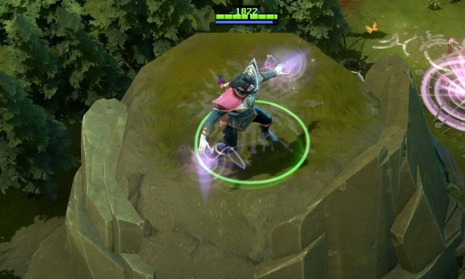

 圣堂刺客
圣堂刺客
背景故事
拉娜娅，圣堂刺客，一直行走在对万物的探求之路上。她有一颗渴求知识的心，早年就非常专注于研究自然法则——对魔法和炼金术有关的书非常入迷，试图重现她在紫罗兰档案馆找到的吉光片羽中记载的实验，并且背下了档案保管者对实验的观察记录。由于她天性悄声隐秘，再加上获得这些东西的高难度，拉娜娅的隐秘行动技巧得到了进一步的强化。要不是她处事低调，她的“神偷”大名早已传遍了各大公会。不过她的研究一步步的将她带进了更为诡异的死角。就在她将自己的隐秘天赋完全奉献给探索宇宙秘密的时候，却无意中打开了一扇隐秘的自然之门：隐之圣堂的入口。入口另一侧的智慧生命早已在等着她了，他们向拉娜娅解答了许多未解之谜，然而当他们告诉拉娜娅她可以为圣堂服务时，这些秘密都算不得什么了。她立誓守护这些秘密，然而更重要的是，为圣堂服务能够满足她那对知识无尽的渴求。在消灭的每个敌人眼中，她发现自己揭示的秘密又多了一分。
折光 生命移除类伤害将无视折光（也不会减少折光次数）。 魔法消耗：100
冷却时间：17.0/17.0/
|
隐匿 除了停在原地外，所有动作都会打破隐匿。 魔法消耗：50/50/50/5
冷却时间：6
|
灵能之刃 圣堂刺客的灵能之刃能锋利的穿梭于敌人之间，对敌人正后方的敌人造成溅射伤害，同时提高攻击距离。 溅射伤害可以伤害隐身单位。 魔法消耗：0
冷却时间：0
|
灵能陷阱 圣堂刺客将一个隐形的神秘陷阱放下以监视敌人的动向，当她刚放下陷阱时，启动陷阱后区域内敌人的移动速度将降低30%。陷阱放置后减速效果逐秒增加5%，在4秒后引爆陷阱将达到最高的50%减速效果。 陷阱没有时间限制。 魔法消耗：15/15/15
冷却时间：11.0/8.0/5
|